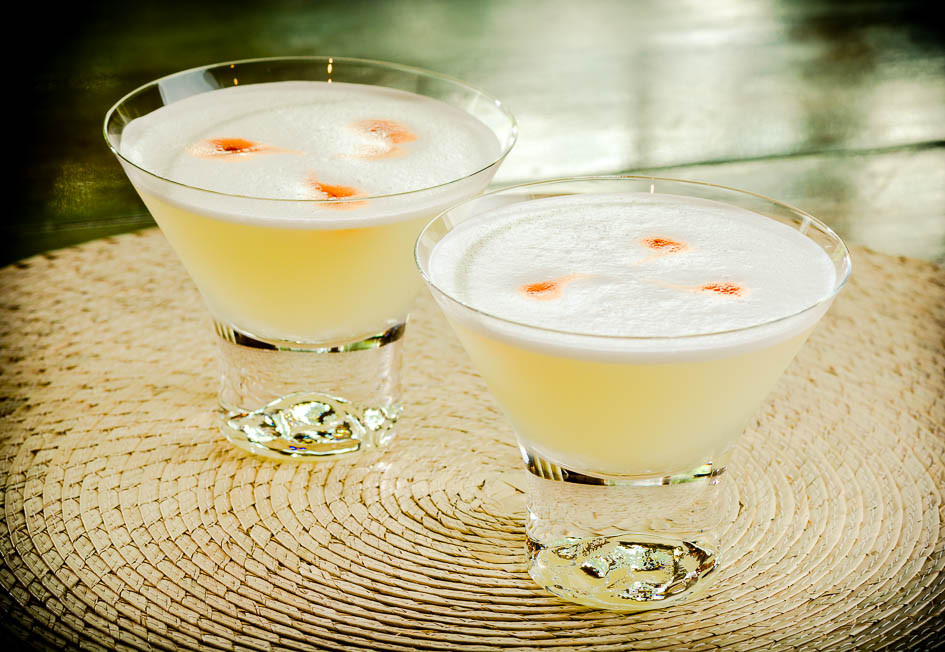

Ingrendients
- 3 shots Pisco
- 1 shot lime juice
- 2 shots simple syrupt
- 2 egg whites
- 3 ice cubes
- sprinkle of angostura bitters
Directions
- Mix ingrendients (without bitters) in a shaker with ice
- Pour in a fancy martini glass or similar
- Top off with the angostura bitters
Drink up!

Pisco sours are originally from Peru, which is the birthplace of pisco. Pisco is a clear alcohol.
- Style: Sour, light, refreshing
- Mix Time: 5 min